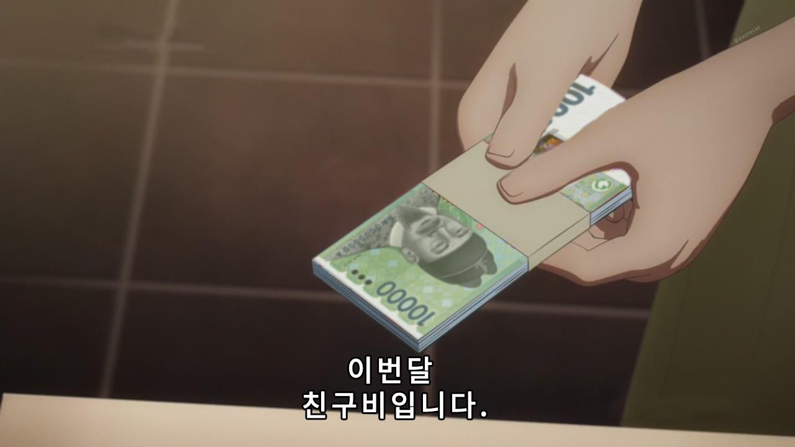

3학년 수업의 22학번. 그렇다, 나는 편입생이다. 만화창작 전공에서 시각디자인으로.
20살에 대학교에 입학했다면 17학번이 되었어야 하는 나의 1년간의 편입 스토리를 통해,
나에 대해 알 수 있는 계기가 되었으면 한다. 사실 친구 만들고 싶어서 그렇다. 연락주세요.
만화창작을 전공했지만 학교에서 배운 일러스트러이터를 통해 2020년 1월, 놀랍게도 중소기업의 디자이너로 취직한 나.
그렇지만 연봉은 박봉, 전문 지식 제로. 1년 동안 회사를 다닌 소감은 ‘이대로는 안 되겠다!’
그렇게 회사 생활을 병행하며 내돈내입 디자인 미대 편입 준비를 시작한다.
고등학교 때도 미술 입시 안 했는데.
나의 (구)회사 제품이다. 맛있다.
3학년으로 입학하는 편입의 특성 상, 디자인 미대 편입은 고등학교 디자인 입시처럼 기초디자인을 보지 않는다.
아크릴 실기로 포스터, 북커버, 로고 디자인 등으로 디자인 역량을 평가한다.
그렇게 21년도 2월부터 나의 아크릴 실기 생쇼가 시작된다.
최고의 명문대 서울과학기술대학교를 비롯한 몇 대학은 공인영어성적을 본다. 그렇다, 토익.
아침에는 회사, 저녁에는 실기, 새벽에는 토익 공부. 4월달에 시작해 6월달에 895점을 찍는다.
사실 나보다 점수 높은 애들이 수두룩했는데 이 점수로 원서를 접수했다.
더 높이지 그랬냐고? 나도 그러고 싶었다…
붙여주기만 한다면 물불 가릴 처지가 아녔던 나는 포트폴리오 제작도 시작한다.
디자이너로 1년간 일했으니까 쉽지 않았냐고? 아니, 대학을 위한 포트폴리오 작업은 너무나 달랐다.
포트폴리오 아이디어가 떠오르지 않아 3주동안 학원에서 울기만 한 적도 있었다.
나 그래도 학원에서 연장자인 편이었는데, 지금 생각하면 쪽팔리다.
마참내! 꿈에 그리던 퇴사를 하고, 실기 수업 시간을 늘렸다. 2시부터 10시까지, 5일.
그리고 우리 학원의 전통인 새벽과제가 시작된다. 이것이 지옥의 시작이다.
학원이 끝나고 집에 가면, 새벽 3시까지 포스터 한장을 완성해 사진을 찍어 보내야 했다.
피드백이 올 때까지 못 잤다. 1분이라도 시간을 넘기면 과제가 추가로 생겼다.
퇴사하면 아침 일찍 학원에 나가 그림 한장 더 그릴 줄 알았지. 그 시간은 오롯히 자는 시간이 된다…
죽여줘...
2022년 1월, 서울과학기술대학교로 실기 시험을 치러 갔다.
1년동안 포스터 실기 준비 했는데 내가 유일하게 포스터 실기 시험을 친 학교다.
아무튼, 첫 감상은 ‘학교 진짜 예쁘다...’ 아름다운 캠퍼스에 홀려 들어가는 길에 진짜 붙고 싶다고 생각했고,
나오는 길에 경쟁률을 확인했다. 87:1이었다. 생각을 접었다.
미래의 모교가 될 지도 모른 채…
그 많은 학교 중 우리 학교만 찍었었다. 신기해.
2월 3일 무작정 제주도로 향한다. 방구석에서 몸을 떨면서 발표를 기다리다가는 정신병에 걸릴 것 같았다.
그렇게 9일까지 나홀로 제주여행을 시작한다. 우리 학원은 붙으면 전화로 알려준다. 근데 7일까지 아무런 연락이 없었다.
모든 희망과 기대를 접고 호텔 침대에 누워 멍때리다가 맞이한 8일. 초콜릿 박물관을 가려고 했는데
운전 못하고, 가는 버스도 없어서 도로 한복판을 저벅저벅 걷던 차에 전화가 온다. 원장쌤이었다.
뚜벅...뚜벅...뚜벅...
붙었다는 소리를 듣자마자 네? 어디를요? 라고 대답한 나.
그렇다. 나는 우리 학교 최초합격자 발표일도 모르고 있었다. 그야 붙을 거란 생각을 안 했으니까 확인도 안 했지.
그렇게 나는 도로 한복판에서 갑자기 오열하는 25살 여성이 된다. 겨울이어따.
3학년 박채린입니다. 올해 나이는 25살이지만요.
최근의 고민은 학교, 학과 정보를 어디서 얻어야 하는가, 친구는 또 어떻게 만들어야 하는가… 입니다.
TMI지만 과잠도 가지고 싶어요. 언제 제작하나요? 이미 끝났나요?

역시 친구비 뿐인가?
아무튼, 멋진 동기들과 함께 학교생활을 할 생각에 설렙니다!
아무쪼록 잘 부탁드립니다. 지나가다 아는 척 한번 해주세요💖